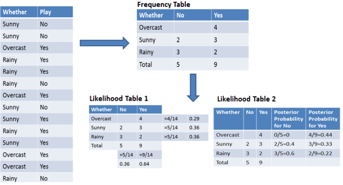
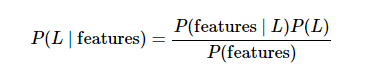
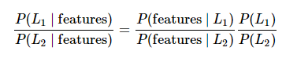
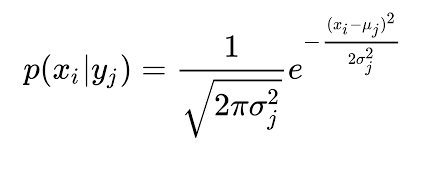
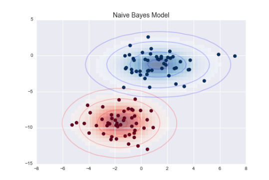

7. Naive Bayesian Methods
Contents
7. Naive Bayesian Methods¶
In machine learning, Naïve Bayes classification is a straightforward and powerful algorithm for the classification task. Naïve Bayes classification is based on applying Bayes’ theorem with strong independence assumption between the features. Naïve Bayes classification produces good results when we use it for textual data analysis such as Natural Language Processing.
Naïve Bayes models are also known as simple Bayes or independent Bayes. All these names refer to the application of Bayes’ theorem in the classifier’s decision rule. Naïve Bayes classifier applies the Bayes’ theorem in practice. This classifier brings the power of Bayes’ theorem to machine learning.
Naive Bayes algorithm intuition¶
Naïve Bayes Classifier uses the Bayes’ theorem to predict membership probabilities for each class such as the probability that given record or data point belongs to a particular class. The class with the highest probability is considered as the most likely class. This is also known as the Maximum A Posteriori (MAP).
The MAP for a hypothesis with 2 events A and B is
MAP (A)
= max (P (A | B))
= max (P (B | A) * P (A))/P (B)
= max (P (B | A) * P (A))
Here, P (B) is evidence probability. It is used to normalize the result. It remains the same, So, removing it would not affect the result.
Naïve Bayes Classifier assumes that all the features are unrelated to each other. Presence or absence of a feature does not influence the presence or absence of any other feature.
In real world datasets, we test a hypothesis given multiple evidence on features. So, the calculations become quite complicated. To simplify the work, the feature independence approach is used to uncouple multiple evidence and treat each as an independent one.
Video NB explained.
How Naive Bayes Classifier Works?¶
Let’s understand the working of Naive Bayes through an example. Given an example of weather conditions and playing sports. You need to calculate the probability of playing sports. Now, you need to classify whether players will play or not, based on the weather condition.
First Approach (In case of a single feature) Naive Bayes classifier calculates the probability of an event in the following steps:
Step 1: Calculate the prior probability for given class labels
Step 2: Find Likelihood probability with each attribute for each class
Step 3: Put these value in Bayes Formula and calculate posterior probability.
Step 4: See which class has a higher probability, given the input belongs to the higher probability class. For simplifying prior and posterior probability calculation, you can use the two tables frequency and likelihood tables. Both of these tables will help you to calculate the prior and posterior probability. The Frequency table contains the occurrence of labels for all features. There are two likelihood tables. Likelihood Table 1 is showing prior probabilities of labels and Likelihood Table 2 is showing the posterior probability.
For simplifying prior and posterior probability calculation, you can use the two tables frequency and likelihood tables. Both of these tables will help you to calculate the prior and posterior probability. The Frequency table contains the occurrence of labels for all features. There are two likelihood tables. Likelihood Table 1 is showing prior probabilities of labels and Likelihood Table 2 is showing the posterior probability. 

Now suppose you want to calculate the probability of playing when the weather is overcast.
Probability of playing:
P(Yes | Overcast) = P(Overcast | Yes) P(Yes) / P (Overcast) …………………(1)
Calculate Prior Probabilities:
P(Overcast) = 4/14 = 0.29
P(Yes)= 9/14 = 0.64
Calculate Posterior Probabilities:
P(Overcast |Yes) = 4/9 = 0.44
Put Prior and Posterior probabilities in equation (1)
P (Yes | Overcast) = 0.44 * 0.64 / 0.29 = 0.98(Higher)
Similarly, you can calculate the probability of not playing:
Probability of not playing:
P(No | Overcast) = P(Overcast | No) P(No) / P (Overcast) …………………(2)
Calculate Prior Probabilities:
P(Overcast) = 4/14 = 0.29
P(No)= 5/14 = 0.36
Calculate Posterior Probabilities:
P(Overcast |No) = 0/9 = 0
Put Prior and Posterior probabilities in equation (2)
P (No | Overcast) = 0 * 0.36 / 0.29 = 0
The probability of a ‘Yes’ class is higher. So you can determine here if the weather is overcast than players will play the sport.
Bayesian Classification¶
Naive Bayes classifiers are built on Bayesian classification methods. These rely on Bayes’s theorem, which is an equation describing the relationship of conditional probabilities of statistical quantities. In Bayesian classification, we’re interested in finding the probability of a label given some observed features, which we can write as P(L | features) . Bayes’s theorem tells us how to express this in terms of quantities we can compute more directly:

If we are trying to decide between two labels—let’s call them L1 and L2 —then one way to make this decision is to compute the ratio of the posterior probabilities for each label:

All we need now is some model by which we can compute P(features | Li) for each label. Such a model is called a generative model because it specifies the hypothetical random process that generates the data. Specifying this generative model for each label is the main piece of the training of such a Bayesian classifier. The general version of such a training step is a very difficult task, but we can make it simpler through the use of some simplifying assumptions about the form of this model.
This is where the “naive” in “naive Bayes” comes in: if we make very naive assumptions about the generative model for each label, we can find a rough approximation of the generative model for each class, and then proceed with the Bayesian classification. Different types of naive Bayes classifiers rest on different naive assumptions about the data
Gaussian Naive Bayes¶
Perhaps the easiest naive Bayes classifier to understand is Gaussian naive Bayes. In this classifier, the assumption is that data from each label is drawn from a simple Gaussian distribution.
When we have continuous attribute values, we made an assumption that the values associated with each class are distributed according to Gaussian or Normal distribution. For example, suppose the training data contains a continuous attribute x. We first segment the data by the class, and then compute the mean and variance of x in each class. Let µi be the mean of the values and let σi be the variance of the values associated with the ith class. Suppose we have some observation value xi . Then, the probability distribution of xi given a class can be computed by the following equation –

Imagine that you have the following data:
Environment setup¶
import platform
print(f"Python version: {platform.python_version()}")
assert platform.python_version_tuple() >= ("3", "6")
import numpy as np
print(f"NumPy version: {np.__version__}")
from IPython.display import YouTubeVideo
Python version: 3.7.11
NumPy version: 1.19.5
%matplotlib inline
import numpy as np
import matplotlib.pyplot as plt
import seaborn as sns; sns.set()
D:\ProgramData\Anaconda3\lib\site-packages\pandas\compat\_optional.py:138: UserWarning: Pandas requires version '2.7.0' or newer of 'numexpr' (version '2.6.9' currently installed).
warnings.warn(msg, UserWarning)
from sklearn.datasets import make_blobs
X, y = make_blobs(100, 2, centers=2, random_state=2, cluster_std=1.5)
plt.scatter(X[:, 0], X[:, 1], c=y, s=50, cmap='RdBu');
One extremely fast way to create a simple model is to assume that the data is described by a Gaussian distribution with no covariance between dimensions. This model can be fit by simply finding the mean and standard deviation of the points within each label, which is all you need to define such a distribution. The result of this naive Gaussian assumption is shown in the following figure:

The ellipses here represent the Gaussian generative model for each label, with larger probability toward the center of the ellipses. With this generative model in place for each class, we have a simple recipe to compute the likelihood P(features | L1) for any data point, and thus we can quickly compute the posterior ratio and determine which label is the most probable for a given point.
This procedure is implemented in Scikit-Learn’s sklearn.naive_bayes.GaussianNB estimator:
from sklearn.naive_bayes import GaussianNB
model = GaussianNB()
model.fit(X, y);
Now let’s generate some new data and predict the label:
rng = np.random.RandomState(0)
Xnew = [-6, -14] + [14, 18] * rng.rand(2000, 2)
ynew = model.predict(Xnew)
Now we can plot this new data to get an idea of where the decision boundary is:
File "<ipython-input-6-773dc4205b33>", line 1
Now we can plot this new data to get an idea of where the decision boundary is:
^
SyntaxError: invalid syntax
plt.scatter(X[:, 0], X[:, 1], c=y, s=50, cmap='RdBu')
lim = plt.axis()
plt.scatter(Xnew[:, 0], Xnew[:, 1], c=ynew, s=20, cmap='RdBu', alpha=0.1)
plt.axis(lim);
We see a slightly curved boundary in the classifications—in general, the boundary in Gaussian naive Bayes is quadratic.
A nice piece of this Bayesian formalism is that it naturally allows for probabilistic classification, which we can compute using the predict_proba method:
yprob = model.predict_proba(Xnew)
yprob[-8:].round(2)
array([[0.89, 0.11],
[1. , 0. ],
[1. , 0. ],
[1. , 0. ],
[1. , 0. ],
[1. , 0. ],
[0. , 1. ],
[0.15, 0.85]])
The columns give the posterior probabilities of the first and second label, respectively. If you are looking for estimates of uncertainty in your classification, Bayesian approaches like this can be a useful approach.
Of course, the final classification will only be as good as the model assumptions that lead to it, which is why Gaussian naive Bayes often does not produce very good results. Still, in many cases—especially as the number of features becomes large—this assumption is not detrimental enough to prevent Gaussian naive Bayes from being a useful method.
Multinomial Naïve Bayes algorithm¶
With a Multinomial Naïve Bayes model, samples (feature vectors) represent the frequencies with which certain events have been generated by a multinomial (p1, … ,pn) where pi is the probability that event i occurs. Multinomial Naïve Bayes algorithm is preferred to use on data that is multinomially distributed. It is one of the standard algorithms which is used in text categorization classification.
The Gaussian assumption just described is by no means the only simple assumption that could be used to specify the generative distribution for each label. Another useful example is multinomial naive Bayes, where the features are assumed to be generated from a simple multinomial distribution. The multinomial distribution describes the probability of observing counts among a number of categories, and thus multinomial naive Bayes is most appropriate for features that represent counts or count rates.
The idea is precisely the same as before, except that instead of modeling the data distribution with the best-fit Gaussian, we model the data distribuiton with a best-fit multinomial distribution.
Example: Classifying Text¶
One place where multinomial naive Bayes is often used is in text classification, where the features are related to word counts or frequencies within the documents to be classified. We discussed the extraction of such features from text in Feature Engineering; here we will use the sparse word count features from the 20 Newsgroups corpus to show how we might classify these short documents into categories.
Let’s download the data and take a look at the target names:
from sklearn.datasets import fetch_20newsgroups
#https://ndownloader.figshare.com/files/5975967
#E:/Researchcode/Introduction2Engineering_ClassBook/assets/20newsbydate
#archive_path = "C:/Users/Judy/scikit_learn_data/20news_home/20newsbydate.tar.gz"
#logger.debug("Decompressing %s", archive_path)
#tarfile.open(archive_path, "r:gz").extractall(path=target_dir)
#os.remove(archive_path)
#data =tarfile.open(archive_path, "r:gz").extractall(path=target_dir)
data = fetch_20newsgroups()
data.target_names
['alt.atheism',
'comp.graphics',
'comp.os.ms-windows.misc',
'comp.sys.ibm.pc.hardware',
'comp.sys.mac.hardware',
'comp.windows.x',
'misc.forsale',
'rec.autos',
'rec.motorcycles',
'rec.sport.baseball',
'rec.sport.hockey',
'sci.crypt',
'sci.electronics',
'sci.med',
'sci.space',
'soc.religion.christian',
'talk.politics.guns',
'talk.politics.mideast',
'talk.politics.misc',
'talk.religion.misc']
categories = ['talk.religion.misc', 'soc.religion.christian',
'sci.space', 'comp.graphics']
train = fetch_20newsgroups(subset='train', categories=categories)
test = fetch_20newsgroups(subset='test', categories=categories)
Here is a representative entry from the data:
print(train.data[5])
From: dmcgee@uluhe.soest.hawaii.edu (Don McGee)
Subject: Federal Hearing
Originator: dmcgee@uluhe
Organization: School of Ocean and Earth Science and Technology
Distribution: usa
Lines: 10
Fact or rumor....? Madalyn Murray O'Hare an atheist who eliminated the
use of the bible reading and prayer in public schools 15 years ago is now
going to appear before the FCC with a petition to stop the reading of the
Gospel on the airways of America. And she is also campaigning to remove
Christmas programs, songs, etc from the public schools. If it is true
then mail to Federal Communications Commission 1919 H Street Washington DC
20054 expressing your opposition to her request. Reference Petition number
2493.
In order to use this data for machine learning, we need to be able to convert the content of each string into a vector of numbers. For this we will use the TF-IDF vectorizer (discussed in Feature Engineering), and create a pipeline that attaches it to a multinomial naive Bayes classifier:
from sklearn.feature_extraction.text import TfidfVectorizer
from sklearn.naive_bayes import MultinomialNB
from sklearn.pipeline import make_pipeline
model = make_pipeline(TfidfVectorizer(), MultinomialNB())
With this pipeline, we can apply the model to the training data, and predict labels for the test data:
model.fit(train.data, train.target)
labels = model.predict(test.data)
print(type(test.data))
<class 'list'>
Now that we have predicted the labels for the test data, we can evaluate them to learn about the performance of the estimator. For example, here is the confusion matrix between the true and predicted labels for the test data:
from sklearn.metrics import confusion_matrix
mat = confusion_matrix(test.target, labels)
sns.heatmap(mat.T, square=True, annot=True, fmt='d', cbar=False,
xticklabels=train.target_names, yticklabels=train.target_names)
plt.xlabel('true label')
plt.ylabel('predicted label');
Evidently, even this very simple classifier can successfully separate space talk from computer talk, but it gets confused between talk about religion and talk about Christianity. This is perhaps an expected area of confusion!
The very cool thing here is that we now have the tools to determine the category for any string, using the predict() method of this pipeline. Here’s a quick utility function that will return the prediction for a single string:
def predict_category(s, train=train, model=model):
pred = model.predict([s])
return train.target_names[pred[0]]
Let’s try it out:
predict_category("sending a payload to the ISS")
'sci.space'
predict_category('discussing islam vs atheism')
'soc.religion.christian'
predict_category('determining the screen resolution')
'comp.graphics'
Remember that this is nothing more sophisticated than a simple probability model for the (weighted) frequency of each word in the string; nevertheless, the result is striking. Even a very naive algorithm, when used carefully and trained on a large set of high-dimensional data, can be surprisingly effective.
When to Use Naive Bayes Because naive Bayesian classifiers make such stringent assumptions about data, they will generally not perform as well as a more complicated model. That said, they have several advantages:
They are extremely fast for both training and prediction
They provide straightforward probabilistic prediction
They are often very easily interpretable
They have very few (if any) tunable parameters
These advantages mean a naive Bayesian classifier is often a good choice as an initial baseline classification. If it performs suitably, then congratulations: you have a very fast, very interpretable classifier for your problem. If it does not perform well, then you can begin exploring more sophisticated models, with some baseline knowledge of how well they should perform.
Naive Bayes classifiers tend to perform especially well in one of the following situations:
When the naive assumptions actually match the data (very rare in practice)
For very well-separated categories, when model complexity is less important
For very high-dimensional data, when model complexity is less important
The last two points seem distinct, but they actually are related: as the dimension of a dataset grows, it is much less likely for any two points to be found close together (after all, they must be close in every single dimension to be close overall). This means that clusters in high dimensions tend to be more separated, on average, than clusters in low dimensions, assuming the new dimensions actually add information. For this reason, simplistic classifiers like naive Bayes tend to work as well or better than more complicated classifiers as the dimensionality grows: once you have enough data, even a simple model can be very powerful.
Kaggle NB in python.
Thomas Bayes (1701-1761)¶
English statistician, philosopher and presbyterian minister.
Blaise Pascal (1623-1662) pioneered the study of probabilies of effects given causes.
On the contrary, Thomas Bayes proposed a formula, known as Bayes’s theorem, for computing the probability of a cause given an effect.
Intuitive explanation¶
Video Decision Tree explained.
Quick proof¶
Video Decision Tree explained.
Naïve Bayes in a nutshell¶
Set of (supervised) learning algorithms based on applying Bayes’ theorem.
“Naïve” assumption: conditional independence between every pair of features given the value of the class variable.